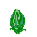
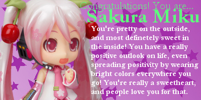
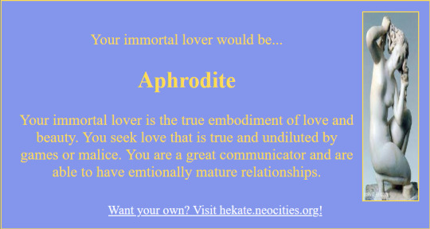
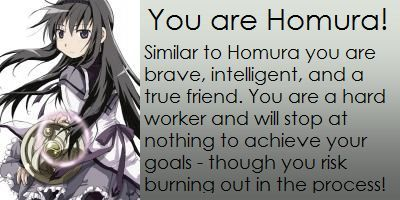

Who am I?
 I am Gigi, the webmistress of this mess. I am 19 and live in my NYC with my two cousins and frog. I am a creative
at heart, which is why I am so in love with programming. I've been online, exploring the indie web for as long as
I can remember, and finally decided to participate when I came across the website Windows93 (linked below) almost 10
years ago. It's so impressive and bursting with creativity, I realized what fun things could be possible with web development. Since then, I've
participated in coding clubs, fellowships, classes etc. I've learned HTML, CSS, JavaScript, Jquery, React, Python,
SQL,
I am Gigi, the webmistress of this mess. I am 19 and live in my NYC with my two cousins and frog. I am a creative
at heart, which is why I am so in love with programming. I've been online, exploring the indie web for as long as
I can remember, and finally decided to participate when I came across the website Windows93 (linked below) almost 10
years ago. It's so impressive and bursting with creativity, I realized what fun things could be possible with web development. Since then, I've
participated in coding clubs, fellowships, classes etc. I've learned HTML, CSS, JavaScript, Jquery, React, Python,
SQL, and am currently learning Ruby and Java in college.

When I'm not coding, I'm usually thrifting, listening to jazz, playing old video games, watching horror movies, going to concerts/dancing, or doing homework o(╥﹏╥)o I'm also exploring networking and crypto after participating in some really fun CTFs! I'm in my script kitty era :p and creating/exploring unique funky websites. This site is meant to be both a portfolio as well as my alternative to traditional social media. It is meant to be all encompasing with no specific topic. Maybe one will develop as time goes on.This site is meant to be both a portfolio as well as my alternative to traditional social media. It is meant to be all encompasing with no specific topic. Maybe one will
fave sites:
windows93.net
macintoshgarden.org
ytch.tv
sodafinder.com
notpron
gifcities.org
vaporwave.ivan.moe
my favorites:
food: pizzaaa -w-
color: pink!
elements: all of them
animals: cats, guinea pigs
band: Enon, Acid Bath, Death
TV Show: True Detective, Shiki
movie: Se7en
game: Skyrim, Dark Souls, Harvest Moon, Exmortis
fun facts:
- Popular with ladies
- Perfectionist
- Drinks cold brews exclusively
- Can't play
sports at all
- Full of ideas
- Will try anything once
- Base my outfits on feng shui
- Able to keep a scecret
-
Local celebrity
- Absolute loser
- Superb ironing technique




I have so so many things to say. I just need to find a way to say it. I am so excited that you're here, and I hope you enjoy your stay!
SIGN MY GUESTBOOK